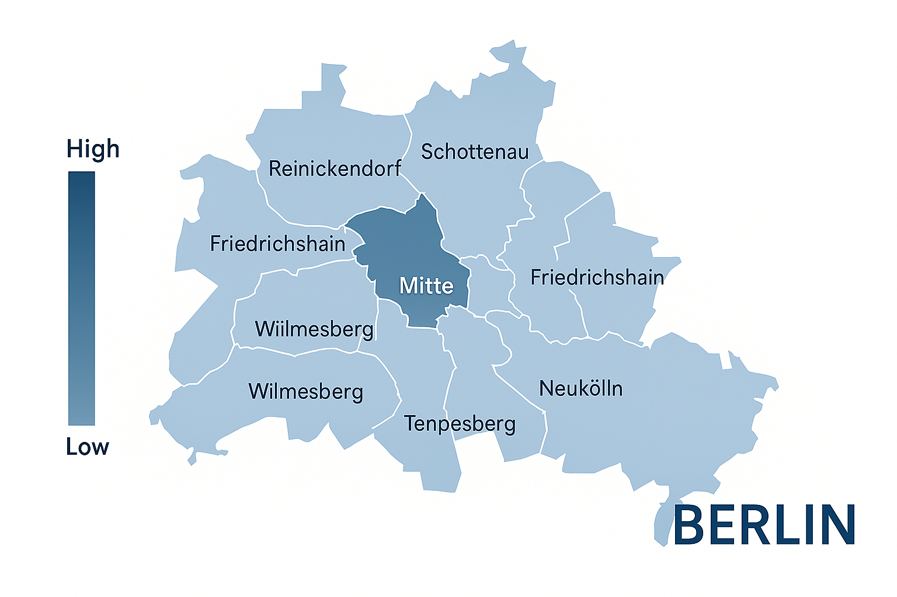

<!DOCTYPE html>
<html lang="en">
<head>
  <meta charset="UTF-8">
  <meta name="viewport" content="width=device-width, initial-scale=1.0">
  <title>Visual Estate</title>
  <link rel="stylesheet" href="../style.css">
  <link rel="stylesheet" href="../city.css">

</html>


<body>


<nav>
    <a href="../index.html" class="logo">Visual Estate</a>
    <div class ="city_nav">Berlin</div>

    <div class="nav-links">
      <a href="../milestone_2.html" style="font-style: italic; color: rgb(169, 45, 45);">About Milestone 2</a>
      <a href="#">About</a>
  
      <div class="dropdown">
        <a>Cities ▾</a>
        <div class="dropdown-content">
          <a href="berlin.html">Berlin</a>
          <a href="london.html">London</a>
          <a href="madrid.html">Madrid</a>
        </div>
      </div>
      <a href="#">Contact</a>
    </div>
  </nav>


<div class = 'city-infos'>
  <h1>Berlin: the city of contrasts</h1>
  <p>Berlin is a city of contrasts, where history meets modernity. The real estate market reflects this duality, with a mix of historic buildings and contemporary developments. The average property prices vary significantly across different districts, influenced by factors such as location, amenities, and historical significance.</p>
  <p>In the heart of Berlin, you can find stunning apartments in historic buildings, while the outskirts offer more affordable options. The city's diverse neighborhoods each have their own unique character, making it an exciting place to explore and invest in real estate.</p>

</div>




</body>